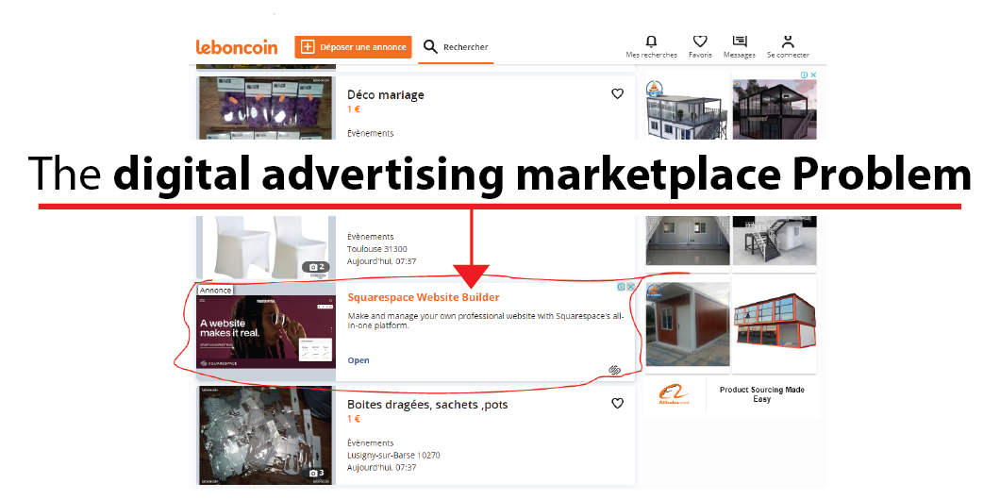
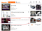

The digital advertising marketplace problem


look at this page from leboncoin.fr, how the ad placement looks so close to the items listed on the website. This not an attempt to criticize leboncoin because it’s now an industry standard and almost all websites displaying ads are doing the same. In advertising marketplace, click is the event that both the advertiser and the publisher seek but click is just one a step of the entire purchase cycle for the marketer. Here the publisher is just concerned about making you click. To reach this goal he or she is doing all possible thing to make you click like making the placement looks like the items listed on the website like this picture below

does someone who by surfing land to this page is really ready for building a website. This pas is all about decor, wedding … its topic is so far from the product advertised but the design of the placement is done by the publisher so close to the item that by error you the visitors can click on it making the publisher win. that’s the goal of the publisher and by some extend the goal of the advertiser also but is it the goal of the product owner to see coming to his product landing page someone who is not concerned or consciously ready to listen to him and discover his product. the transaction of a digital advertising marketplace being the click there is a misalignment of the goals of the different participants through the funnel that leads to the transaction. I think that digital advertising marketplaces transactions are not fair even if it something that still product owners benefit from cause the advertising loop for selling products and services works. but everybody knows that this loop is losing year by year his effect. There is an opportunity for building a digital advertising marketplace that fixes this issue for fairness. transaction of a good advertising marketplace should be converted to achieve that the marketplace should be able to track effectively these conversion events and give to all participants all data about those events for them to work on it for improving their respective process.
I tell you that I am planning to launch a Marketplaces Academy and Invite you to joint. This Academy will be oriented by marketplaces to be done and you will do them with the help of each one of the participants.
If you want to be part of this marketplace academy, you can give me a touch but if you want to discover another problem of the advertising marketplace you can read THIS